산업위생관리기사 (2015-05-31 기출문제)
1과목: 산업위생학개론
1. 다음 중 산업위생의 정의를 가장 올바르게 설명한 것은?
- 근로자와 일반 대중의 건강점검과 질병의 치료를 연구하는 학문이다.
- 인간과 주위의 생화학적 관계를 조사하여 질병의 원인을 분석하는 기술이다.
- 인간과 직업, 기계, 환경, 노동의 관계를 과학적으로 연구하는 학문이다.
- 근로자나 일반 대중에게 질병 등을 초래하는 작업환경 요인과 스트레스를 예측, 인식, 평가, 관리하는 과학과 기술이다.
(정답률: 87%)

2. 다음 중 산업피로를 줄이기 위한 바람직한 교대근무에 관한 내용으로 틀린 것은?
- 근무시간의 간격은 15~16시간 이상으로 하여야 한다.
- 야간근무 교대시간은 상오 0시 이전에 하는 것이 좋다.
- 야간근무는 4일 이상 연속해야 피로에 적응할 수 있다.
- 야간근무시 가면(假免)시간은 근무시간에 따라 2~4시간으로 하는 것이 좋다.
(정답률: 81%)
3. 산업안전보건법령상 석면에 대한 작업환경측정결과 측정치가 노출기준을 초과하는 경우 그 측정일로부터 몇 개월에 몇 회 이상의 작업환경측정을 하여야 하는가?
- 1개월에 1회 이상
- 3개월에 1회 이상
- 6개월에 1회 이상
- 12개월에 1회 이상
(정답률: 75%)
4. 다음 중 근육 운동에 필요한 에너지를 생산하는 혐기성 대사의 반응이 아닌 것은?
- ATP + H2O ⇆ ADP + P + free energy
- glycogen + ADP ⇆ citrate + ATP
- glucose + P + ADP → Lactate + ATP
- creatine phosphate + ADP ⇆ creatine + ATP
(정답률: 53%)
5. 다음 중 “사무실 공기관리”에 대한 설명으로 틀린 것은?
- 관리기준은 8시간 기간가중평균농도 기준이다.
- 이산화탄소와 일산화탄소는 비분산적외선 검출기의 연속 측정에 의한 직독식 분석 방법에 의한다.
- 이산화탄소의 측정결과 평가는 각 지점에서 측정한 측정치 중 평균값을 기준으로 비교 · 평가한다.
- 공기의 측정시료는 사무실 내에서 공기의 질이 가장 나쁠 것으로 예상되는 2곳 이상에서 사무실 바닥면으로부터 0.9~1.5m의 높이에서 채취한다.
(정답률: 74%)
6. 우리나라 직업병에 관한 역사에 있어 원진레이온(주)에서 발생한 사건의 주요 원인 물질은?
- 이황화탄소(CS2)
- 수은(Hg)
- 벤젠(C6H6)
- 납(Pb)
(정답률: 86%)
7. 육체적 작업능력(PWC)이 16kcal/min인 근로자가 1일 8시간 동안 물체를 운반하고 있고, 이때의 작업대사량은 9kcal/min이고, 휴식시의 대사량은 1.5kcal/min이다. 다음 중 적정휴식시간과 작업시간으로 가장 적합한 것은?
- 매시간당 25분 휴식, 35분 작업
- 매시간당 29분 휴식, 31분 작업
- 매시간당 35분 휴식, 25분 작업
- 매시간당 39분 휴식, 21분 작업
(정답률: 77%)
8. 다음 중 인간의 행동에 영향을 미치는 산업안전심리의 5대 요소가 아닌 것은?
- 동기(motive)
- 기질(temper)
- 경계(caution)
- 습성(habits)
(정답률: 67%)
9. 다음 중 신체적 결함과 그 원인이 되는 작업이 가장 적합하게 연결된 것은?
- 평발 - VDT 작업
- 진폐증 - 고압, 저압작업
- 중추신경 장해 - 광산작업
- 경견완증후군 - 타이핑작업
(정답률: 89%)
10. 다음 중 산업위생전문가로서 근로자에 대한 책임과 가장 관계가 깊은 것은?
- 근로자의 건강보호가 산업위생전문가의 1차적인 책임이라는 것을 인식한다.
- 이해관계가 있는 상황에서는 고객의 입장에서 관련 자료를 제시한다.
- 기업주에 대하여는 실현 가능한 개선점으로 선별하여 보고한다.
- 적절하고도 확실한 사실을 근거로 전문적인 견해를 발표한다.
(정답률: 79%)
11. 다음 중 피로의 발생 원인과 가장 거리가 먼 것은?
- 산소 공급의 부족
- 혈중 포도당의 저하
- 항상성(homeostasis)의 상실
- 근육내 글리코겐의 증가
(정답률: 85%)
12. NOISH에서 제시한 권장무게한계가 6kg이고, 근로자가 실제 작업하는 중량물의 무게가 12kg라면 중량물 취급지수는 얼마인가?
- 0.5
- 1.0
- 2.0
- 6.0
(정답률: 81%)
13. 다음 중 사고예방대책 5단계를 올바르게 나열한 것은?
- 사실의 발견 → 조직 → 분석 · 평가 → 시정방법의 선정 → 시정책의 적용
- 조직 → 사실의 발견 → 분석 · 평가 → 시정방법의 선정 → 시정책의 적용
- 사실의 발견 → 조직 → 시정방법의 선정 → 시정책의 적용 → 분석 · 평가
- 조직 → 분석 · 평가 → 사실의 발견 → 시정방법의 선정 → 시정책의 적용
(정답률: 86%)
14. 60명의 근로자가 작업하는 사업장에서 1년 동안에 3건의 재해가 발생하여 5명의 재해자가 발생하였다. 이때 근로손실일수가 35일이었다면 이 사업장의 도수율은 약 얼마인가? (단, 근로자는 1일 8시간씩 연간 300일을 근무하였다.
- 0.24
- 20.83
- 34.72
- 83.33
(정답률: 78%)
15. 다음 중 산업안전보건법상 산업재해의 정의로 가장 적합한 것은?
- 예기치 않은, 계획되지 않은 사고이며, 상해를 수반하는 경우를 말한다.
- 작업상의 재해 또는 작업환경으로부터의 무리한 근로의 결과로부터 발생되는 절상, 골절, 염좌 등의 상해를 말한다.
- 근로자가 업무에 관계되는 건설물 · 설비 · 원재료 · 가스 · 증기 · 분진 등에 의하거나 작업 또는 그 밖의 업무로 인하여 사망 또는 부상하거나 질병에 걸리는 것을 말한다.
- 불특정 다수에게 의도하지 않은 사고가 발생하여 신체적, 재산상의 손실이 발생하는 것을 말한다.
(정답률: 77%)
16. 다음 중 산업정신건강에 대한 설명과 가장 거리가 먼 것은?
- 사업장에서 볼 수 있는 심인성 정신장해로는 성격이상, 노이로제, 히스테리 등이 있다.
- 직장에서 정신면의 건강관리상 특히 중요시되는 정신장해는 정신분열증, 조울병, 알콜중독 등이다.
- 정신분열증이나 조울병은 과거에 내인성 정신병이라고 하였으나 최근에는 심인도 관련하여 발병하는 것으로 알려져 있다.
- 정신건강은 단지 정신병, 신경증, 정신지체 등의 정신장해가 없는 것만을 의미한다.
(정답률: 87%)
17. 다음 중 일반적인 실내공기질 오염과 가장 관계가 적은 질환은?
- 규폐증(silicosis)
- 가습기 열(humidifier fever)
- 레지오넬라병(Legionnaires disease)
- 과민성 폐렴(Hypersensitivity pneumonitis)
(정답률: 61%)
18. 산업안전보건법령에 따라 근로자가 근골격계 부담작업을 하는 경우 유해요인조사의 주기는?
- 6개월
- 2년
- 3년
- 5년
(정답률: 61%)
19. 다음 중 물질안전보건자료(MSDS)와 관련한 기준에 따라 MSDS를 작성할 경우 반드시 포함되어야 하는 항목이 아닌 것은?
- 유해 · 위험성
- 게시방법 및 위치
- 노출방지 및 개인보호구
- 화학제품과 회사에 관한 정보
(정답률: 66%)
20. 다음 중 노출기준에 대한 설명으로 옳은 것은?
- 노출기준 이하의 노출에서는 모든 근로자에게 건강상의 영향을 나타내지 않는다.
- 노출기준은 질병이나 육체적 조건을 판단하기 위한 척도로 사용될 수 있다.
- 작업장이 아닌 대기에서는 건강한 사람이 대상이 되기 때문에 동일한 노출기준을 사용할 수 있다.
- 노출기준은 독성의 강도를 비교할 수 있는 지표가 아니다.
(정답률: 59%)
2과목: 작업위생측정 및 평가
21. 처음 측정한 측정치는 유량, 측정시간, 회수율 및 분석 등에 의한 오차가 각각 15%, 3%, 9%, 5% 였으나 유량에 의한 오차가 개선되어 10%로 감소되었다면 개선 전 측정치의 누적오차와 개선후의 측정치의 누적오차의 차이(%)는?
- 6.6%
- 5.6%
- 4.6%
- 3.8%
(정답률: 67%)
22. 다음 중 계통 오차의 종류로 거리가 먼 것은?
- 한 가지 실험측정을 반복할 때 측정값들의 변동으로 발생되는 오차
- 측정 및 분석기기의 부정확성으로 발생된 오차
- 측정하는 개인의 선입관으로 발생된 오차
- 측정 및 분석시 온도나 습도와 같이 알려진 외계의 영향으로 생기는 오차
(정답률: 50%)
23. 가스상 물질의 연속시료 채취방법 중 흡수액을 사용한 능동식 시료채취방법(시료채취 펌프를 이용하여 강제적으로 공기를 매체에 통과시키는 방법)의 일반적 시료 채취 유량 기준으로 가장 적절한 것은?
- 0.2L/분 이하
- 1.0L/분 이하
- 5.0L/분 이하
- 10.0L/분 이하
(정답률: 61%)
24. 1차 표준 기구 중 일반적 사용범위가 10~500mL/분, 정확도는 ±0.⑤~0.25% 인 것은?
- 폐활량계
- 가스치환병
- 건식가스미터
- 습식테스트미터
(정답률: 66%)
25. 냉동기에서 냉매체가 유출되고 있는지 검사하려고 할 때 가장 적합한 측정기구는 무엇인가?
- 스펙트로미터(Spectrometer)
- 가스크로마토그래피(Gas Chromatography)
- 할로겐화합물 측정기기(Halide Meter)
- 연소가스지시계(Combustible Gas Meter)
(정답률: 55%)
26. 옥내작업장에서 측정한 건구온도가 73℃이고 자연습구온도 65℃, 흑구온도 81℃일 때, WBGT는?(오류 신고가 접수된 문제입니다. 반드시 정답과 해설을 확인하시기 바랍니다.)
- 64.4℃
- 67.4℃
- 69.8℃
- 71.0℃
(정답률: 78%)
27. 측정결과를 평가하기 위하여 “표준화 값”을 산정할 때 적용되는 인자는? (단, 고용노동부 고시 기준)
- 측정농도와 노출기준
- 평균농도와 표준편차
- 측정농도와 평균농도
- 측정농도와 표준편차
(정답률: 66%)
28. 근로자 개인의 청력 손실 여부를 알기 위하여 사용하는 청력 측정용 기기를 무엇이라고 하는가?
- Audiometer
- Sound level meter
- Noise dosimeter
- Impact sound level meter
(정답률: 62%)
29. 작업환경의 감시(monitoring)에 관한 목적을 가장 적절하게 설명한 것은?
- 잠재적인 인체에 대한 유해성을 평가하고 적절한 보호대책을 결정하기 위함
- 유해물질에 의한 근로자의 폭로도를 평가하기 위함
- 적절한 공학적 대책수립에 필요한 정보를 제공하기 위함
- 공정변화로 인한 작업환경 변화의 파악을 위함
(정답률: 75%)
30. 금속제품을 탈지 세정하는 공정에서 사용하는 유기용제인 trichloroethylene의 근로자 노출농도를 측정하고자 한다. 과거의 노출농도를 조사해본 결과, 평균 40ppm이었다. 활성탄관(100mg/50mg)을 이용하여 0.14L/분으로 채취하였다. 채취해야할 최소한의 시간(분)은? (단, trichloroethylene의 분자량: 131.39, 25℃, 1기압, 가스크로마토그래피의 정량한계(LOQ: 0.4mg)
- 10.3
- 13.3
- 16.3
- 19.3
(정답률: 68%)
31. 직독식 측정기구가 전형적 방법에 비해 가지는 장점과 가장 거리가 먼 것은?
- 측정과 작동이 간편하여 인력과 분석비를 절감할 수 있다.
- 현장에서 실제 작업시간이나 어떤 순간에서 유해인자의 수준과 변화를 손쉽게 알 수 있다.
- 직독식 기구로 유해물질을 측정하는 방법의 민감도와 특이성 외의 모든 특성은 전형적 방법과 유사하다.
- 현장에서 즉각적인 자료가 요구될 때 매우 유용하게 이용될 수 있다.
(정답률: 69%)
32. 다음 중 흑구 온도의 측정시간 기준으로 적절한 것은? (단, 직경이 5cm인 흑구 온도계 기준)
- 5분 이상
- 10분 이상
- 15분 이상
- 25분 이상
(정답률: 66%)
33. 작업장 내 기류측정에 대한 설명으로 옳지 않은 것은?
- 풍차풍속계는 풍차의 회전속도로 풍속을 측정한다.
- 풍차풍속계는 보통 1~150m/sec 범위의 풍속을 측정하며 옥외용이다.
- 기류속도가 아주 낮을 때에는 카타온도계와 복사풍속계를 사용하는 것이 정확하다.
- 카타온도계는 기류의 방향이 일정하지 않던가, 실내 0.2~0.5m/s 정도의 불감기류를 측정할 때 사용한다.
(정답률: 60%)
34. 제관공장에서 용접흄을 측정한 결과가 다음과 같다면 노출기준 초과여부평가로 알맞은 것은?
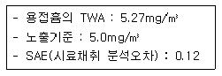
- 초과
- 초과가능
- 초과하지 않음
- 펑가할 수 없음
(정답률: 42%)
35. 다음 기체에 관한 법칙 중 일정한 온도조건에서 부피와 압력은 반비례 한다는 것은?
- 보일의 법칙
- 샤를의 법칙
- 게이-루삭의 법칙
- 라울트의 법칙
(정답률: 77%)
36. 어느 작업장의 온도가 18℃이고, 기압이 770mmHg, Methylethyl Ketone(분자량=72)의 농도가 26ppm 일 때 mg/m3 단위로 환산된 농도는?
- 64.5
- 79.4
- 87.3
- 93.2
(정답률: 63%)
37. 태양광선이 내리 쬐는 옥외작업장에서 작업강도 중등도의 연속작업이 이루어질 때 습구흑구 온도지수(WBGT)는? (단, 건구온도: 30℃, 자연습구온도: 28℃, 흑구온도: 32℃)
- WBGT: 27.0℃
- WBGT: 28.2℃
- WBGT: 29.0℃
- WBGT: 30.2℃
(정답률: 77%)
38. 고열 측정방법에 관한 내용이다. ( )안에 맞는 내용은? (단, 고용노동부 고시 기준)
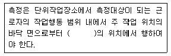
- 50cm 이상, 120cm 이하
- 50cm 이상, 150cm 이하
- 80cm 이상, 120cm 이하
- 80cm 이상, 150cm 이하
(정답률: 71%)
39. 다음 물질 중 실리카겔과 친화력이 가장 큰 것은?
- 알데하이드류
- 올레핀류
- 파라핀류
- 에스테르류
(정답률: 65%)
40. 유해가스의 생리학적 분류를 단순 질식제, 화학질식제, 자극가스 등으로 할 때 다음 중 단순질식제로 구분되는 것은?
- 일산화탄소
- 아세틸렌
- 포름알데히드
- 오존
(정답률: 43%)
3과목: 작업환경관리대책
41. 이산화탄소 가스의 비중은? (단, 0℃, 1기압 기준)
- 1.34
- 1.41
- 1.52
- 1.63
(정답률: 50%)
42. 외부식 후드에서 플렌지가 붙고 공간에 설치된 후드와 플렌지가 붙고 면에 고정 설치된 후드의 필요 공기량을 비교할 때 플렌지가 붙고 면에 고정 설치된 후드는 플렌지가 붙고 공간에 설치된 후드에 비하여 필요공기량을 약 몇 % 절감할 수 있는가? (단, 후드는 장방형 기준)
- 12%
- 20%
- 25%
- 33%
(정답률: 47%)
43. 90° 곡관의 반경비가 2.0일 때 압력손실계수는 0.27이다. 속도압이 14mmH2O라면 곡관의 압력손실(14mmH2O)은?
- 7.6
- 5.5
- 3.8
- 2.7
(정답률: 57%)
44. 유해물의 발산을 제거하거나 감소시킬 수 있는 생산공정 작업방법 개량과 거리가 가장 먼 것은?
- 주물공정에서 쉘 몰드법을 채용한다.
- 석면 함유분체 원료를 건식믹서로 혼합하고 용제를 가하던 것을 용제를 가한 후 혼합한다.
- 광산에서는 습식 착암기를 사용하여 파쇄, 연마작업을 한다.
- 용제를 사용하는 분무도장을 에어스프레이 도장으로 바꾼다.
(정답률: 58%)
45. 강제환기의 효과를 제고하기 위한 원칙으로 틀린 것은?
- 오염물질 배출구는 가능한 한 오염원으로부터 가까운 곳에 설치하여 점 환기 현상을 방지한다.
- 공기배출구와 근로자의 작업위치 사이에 오염원이 위치하여야 한다.
- 공기가 배출되면서 오염장소를 통과하도록 공기배출구와 유입구의 위치를 선정한다.
- 오염원 주위에 다른 작업 공정이 있으면 공기배출량을 공급량보다 약간 크게 하여 음압을 형성하여 주위 근로자에게 오염 물질이 확산 되지 않도록 한다.
(정답률: 77%)
46. 흡인풍량이 200m3/min, 송풍기 유효전압이 150mmH2O, 송풍기 효율이 80%, 여유율이 1.2인 송풍기의 소요 동력은? (단, 송풍기 효율과 여유율을 고려함)
- 4.8kW
- 5.4kW
- 6.7kW
- 7.4kW
(정답률: 67%)
47. 분진대책 중의 하나인 발진의 방지 방법과 가장 거리가 먼 것은?
- 원재료 및 사용재료의 변경
- 생산기술의 변경 및 개량
- 습식화에 의한 분진발생 억제
- 밀폐 또는 포위
(정답률: 60%)
48. 덕트 직경이 30cm 이고 공기유속이 5m/sec일 때 레이놀드수(Re)는? (단, 공기의 점성계수는 20℃에서 1.85×10-5kg/sec·m, 공기밀도는 20℃에서 1.2kg/m3)
- 97300
- 117500
- 124400
- 135200
(정답률: 75%)
49. 송풍기의 송풍량이 200m3/min이고, 송풍기 전압이 150mmH2O이다. 송풍기의 효율이 0.8이라면 소요동력(kW)은?
- 약 4kW
- 약 6kW
- 약 8kW
- 약 10kW
(정답률: 75%)
50. 한랭작업장에서 일하고 있는 근로자의 관리에 대한 내용으로 옳지 않는 것은?
- 한랭에 대한 순화는 고온순화보다 빠르다.
- 노출된 피부나 전신의 온도가 떨어지지 않도록 온도를 높이고 기류의 속도를 낮추어야 한다.
- 필요하다면 작업을 자신이 조절하게 한다.
- 외부 액체가 스며들지 않도록 방수 처리된 의복을 입는다.
(정답률: 66%)
51. 마스크 성능 및 시험방법에 관한 설명으로 틀린 것은?
- 배기변의 작동 기밀시험 : 내부의 압력이 상압으로 돌아올 때까지 시간은 5초 이내어야 한다.
- 불연성시험: 버너 불꽃의 끝부분에서 20mm위치의 불꽃온도를 800±50℃로 하여 마스크를 초당 6±0.5cm의 속도로 통과시킨다.
- 분진포집효율시험 : 마스크에 석영분진함유공기를 매분 30L의 유량으로 통과시켜 통과 전후의 석영농도를 측정한다.
- 배기저항시험 : 마스크에 공기를 매분 30L의 유량으로 통과시켜 마스크의 내외의 압력차를 측정한다.
(정답률: 41%)
52. 유효전압이 120mmH2O, 송풍량이 306m3/min인 송풍기의 축동력이 7.5kW일 때 이송풍기의 전압 효율은? (단, 기타 조건은 고려하지 않음)
- 65%
- 70%
- 75%
- 80%
(정답률: 64%)
53. 다음 보기에서 여과 집진장치의 장점만을 고른 것은?
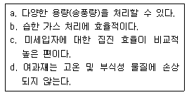
- a, b
- a, c
- c, d
- b, d
(정답률: 75%)
54. 희석환기의 또 다른 목적은 화재나 폭발을 방지하기 위한 것이다. 폭발 하한치인 LEL(lower explosive limit)에 대한 설명 중 틀린 것은?
- 폭발성, 인화성이 있는 가스 및 증기 혹은 입자상의 물질을 대상으로 한다.
- LEL은 근로자의 건강을 위해 만들어 놓은 TLV보다 낮은 값이다.
- LEL의 단위는 %이다.
- 오븐이나 덕트처럼 밀폐되고 환기가 계속적으로 가동되고 있는 곳에서는 LEL의 1/4을 유지하는 것이 안전하다.
(정답률: 63%)
55. 고속기류 내로 높은 초기 속도로 배출되는 작업조건에서 회전연삭, 블라스팅 작업공정시 제어속도로 적절한 것은? (단, 미국산업위생전문가협의회 권고 기준)
- 1.8m/sec
- 2.1m/sec
- 8.8m/sec
- 12.8m/sec
(정답률: 48%)
56. 열부하와 노동의 정도에 따라 근로자가 체온유지에 필요한 기류의 속도는 다르다. 작업조건과 그에 따른 적절한 기류속도 범위로 틀린 것은?
- 앉은 작업을 하는 고정작업장(계속노출)일 때: 0.1~0.2m/sec
- 선 작업을 하는 고정작업장(계속노출)일 때: 0.5~1m/sec
- 저열부하와 경노동(간헐노출)일 때: 5~10m/sec
- 고열부하와 중노동(간헐노출)일 때: 15~20m/sec
(정답률: 38%)
57. 청력보호구의 차음효과를 높이기 위해서 유의할 사항으로 볼 수 없는 것은?
- 청력보호구는 머리의 모양이나 귓구멍에 잘 맞는 것을 사용하여 차음효과를 높이도록 한다.
- 청력보호구는 기공이 많은 재료로 만들어 흡음효과를 높여야 한다.
- 청력보호구를 잘 고정시켜 보호구 자체의 진동을 최소한도로 줄이도록 한다.
- 귀덮개 형식의 보호구는 머리카락이 길 때와 안경테가 굵거나 잘 부착되지 않을 때에는 사용하지 말도록 한다.
(정답률: 84%)
58. 산소가 결핍된 밀폐공간에서 작업하려고 한다. 다음 중 가장 적합한 호흡용 보호구는?
- 방진마스크
- 방독마스크
- 송기마스크
- 면체 여과식 마스크
(정답률: 87%)
59. 귀덮개의 착용시 일반적으로 요구되는 차음효과를 가장 알맞게 나타낸 것은?
- 저음역 20dB 이상, 고음역 45dB 이상
- 저음역 20dB 이상, 고음역 55dB 이상
- 저음역 30dB 이상, 고음역 40dB 이상
- 저음역 30dB 이상, 고음역 50dB 이상
(정답률: 73%)
60. 80㎛인 분진 입자를 중력 침강실에서 처리하려고 한다. 입자의 밀도는 2g/cm3, 가스의 밀도는 1.2kg/m3, 가스의 점성계수는 2.0×10-3 g/cm·s 일 때 침강속도는? (단, Stokes's 식 적용)
- 3.49×10-3m/sec
- 3.49×10-2m/sec
- 4.49×10-3m/sec
- 4.49×10-2m/sec
(정답률: 45%)
4과목: 물리적유해인자관리
61. 작업장의 습도를 측정한 결과 절대습도는 4.57mmHg, 포화습도는 18.25mmHg 이었다. 이 때 이 작업장의 습도 상태에 대하여 가장 올바르게 설명한 것은?
- 적당하다.
- 너무 건조하다.
- 습도가 높은 편이다.
- 습도가 포화상태이다.
(정답률: 76%)
62. 다음 중 고압환경에서 발생할 수 있는 화학적인 인체 작용이 아닌 것은?
- 질소마취작용에 의한 작업력 저하
- 일산화탄소 중독에 의한 호흡곤란
- 산소중독증상으로 간질 모양의 경련
- 이산화탄소 분압증가에 의한 동통성 관절 장애
(정답률: 67%)
63. 다음 중 자외선에 관한 설명으로 틀린 것은?
- 비전리 방사선이다.
- 태양광선, 고압수은증기등, 전기용접 등이 배출원이다.
- 구름이나 눈에 반사되며, 고층구름이 낀 맑은 날에 가장 많다.
- 태양에너지의 52%를 차지하며 보통 700~1400nm 파장을 말한다.
(정답률: 71%)
64. 다음 중 자외선 노출로 인해 발생하는 인체의 건강영향이 아닌 것은?
- 색소 침착
- 광독성 장해
- 피부 비후
- 피부암 발생
(정답률: 73%)
65. 심한 소음에 반복 노출되면, 일시적인 청력 변화는 영구적 청력변화로 변하게 되는데, 이는 다음 중 어느 기관의 손상으로 인한 것인가?
- 원형창
- 코르티기관
- 삼반규반
- 유스타키오관
(정답률: 72%)
66. 시간당 150kcal 열량이 소요되는 작업을 하는 실내 작업장이다. 다음 온도 조건에서 시간당 작업휴식 시간비로 가장 적절한 것은?
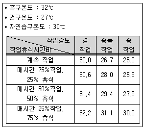
- 계속작업
- 매시간 25% 작업, 75%휴식
- 매시간 50% 작업, 50%휴식
- 매시간 75% 작업, 25%휴식
(정답률: 65%)
67. 현재 총 흡음량이 1200sabins인 작업장의 천장에 흡음물질을 첨가하여 2800sabins을 더할 경우 예측되는 소음감소량(dB)은 약 얼마인가?
- 3.5
- 4.2
- 4.8
- 5.2
(정답률: 66%)
68. 다음 중 산소결핍이 진행되면서 생체에 나타나는 영향을 순서대로 나열한 것은?
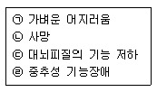
- ㉠ → ㉢ → ㉣ → ㉡
- ㉠ → ㉣ → ㉢ → ㉡
- ㉢ → ㉠ → ㉣ → ㉡
- ㉢ → ㉣ → ㉠ → ㉡
(정답률: 72%)
69. 다음 중 외부조사보다 체내 흡입 및 섭취로 인한 내부조사의 피해가 가장 큰 전리방사선의 종류는?
- α선
- β선
- γ선
- χ선
(정답률: 48%)
70. 다음 중 일반적으로 소음계에서 A 특성치는 몇 phon의 등청감곡선과 비슷하게 주파수에 따른 반응을 보정하여 측정한 음압수준을 말하는가?
- 40
- 70
- 100
- 140
(정답률: 80%)
71. 전신진동은 진동이 작용하는 축에 따라 인체의 영향을 미치는 주파수의 범위가 다르다. 각 축에 따른 주파수의 범위로 옳은 것은?
- 수직방향 : 4~8Hz, 수평방향 : 1~2Hz
- 수직방향 : 10~20Hz, 수평방향 : 4~8Hz
- 수직방향 : 2~100Hz, 수평방향 : 8~150Hz
- 수직방향 : 8~1500Hz, 수평방향 : 50~100Hz
(정답률: 47%)
72. 작업기계에서 음향파워레벨(PWL)이 110dB 소음이 발생되고 있다. 이 기계의 음향파워는 몇 W(watt)인가?
- 0.⑤
- 0.1
- 1
- 10
(정답률: 61%)
73. 다음 중 단기간 동안 자외선(UV)에 초과 노출될 경우 발생하는 질병은?
- Hypothermia
- Stoker's problem
- Welder's flash
- Pyrogenic response
(정답률: 71%)
74. 다음 중 진동에 대한 설명으로 틀린 것은?
- 전신진동에 대해 인체는 대략 0.01m/s2에서 10m/s2까지의 진동 가속도를 느낄 수 있다.
- 진동 시스템을 구성하는 3가지 요소는 질량(mass), 탄성(elasticity)과 댐핑(damping) 이다.
- 심한 진동에 노출될 경우 일부 노출군에서 뼈, 관절 및 신경, 근육, 혈관 등 연부조직에 병변이 나타난다.
- 간헐적인 노출시간(주당 1일)에 대해 노출 기준치를 초과하는 주파수-보정, 실표치, 성분가속도에 대한 급성노출은 반드시 더 유해하다.
(정답률: 60%)
75. 다음 중 자연채광을 이용한 조명방법으로 가장 적절하지 않은 것은?
- 입사각은 25°미만이 좋다.
- 실내 각점의 내각은 4~5°가 좋다.
- 창의 면적은 바닥면적의 15~20%가 이상적이다.
- 창의 방향은 많은 채광을 요구할 경우 남향이 좋으며 조명의 평등을 요하는 작업실의 경우 북창이 좋다.
(정답률: 74%)
76. 다음 중 1기압(atm)에 관한 설명으로 틀린 것은?
- 약 1kgf/cm2과 동일하다.
- torr로는 0.76에 해당한다.
- 수은주로 760mmHg과 동일하다.
- 수주(水株)로 10332mmH2O에 해당한다.
(정답률: 77%)
77. 다음 중 한랭환경에 의한 건강장해에 대한 설명으로 틀린 것은?
- 전신저체온의 첫 증상은 억제하기 어려운 떨림과 냉(冷)감각이 생기고 심박동이 불규칙하고 느려지며, 맥박은 약해지고 혈압이 낮아진다.
- 제2도 동상은 수포와 함께 광범위한 삼출성 염증이 일어나는 경우를 말한다.
- 참호족은 지속적인 국소의 영양결핍 때문이며 한랭에 의한 신경조직의 손상이 발생한다.
- 레이노씨 병과 같은 혈관 이상이 있을 경우에는 증상이 악화된다.
(정답률: 64%)
78. 다음 설명 중 ( ) 안에 알맞은 내용으로 나열한 것은?
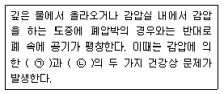
- ㉠ 가스팽창, ㉡ 질소기포형성
- ㉠ 가스압축, ㉡ 이산화탄소중독
- ㉠ 질소기포형성, ㉡ 산소중독
- ㉠ 폐수종, ㉡ 저산소증
(정답률: 72%)
79. 산업안전보건법령(국내)에서 정하는 일일 8시간 기준의 소음노출기준과 ACGIH 노출기준의 비교 및 각각의 기준에 대한 노출시간 반감에 따른 소음변화율을 비교한 [표] 중 올바르게 구분한 것은?
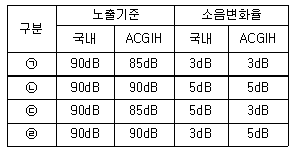
- ㉠
- ㉡
- ㉢
- ㉣
(정답률: 78%)
80. 다음 중 조명을 작업환경의 한 요인으로 볼 때 고려해야 할 중요한 사항과 가장 거리가 먼 것은?
- 빛의 색
- 눈부심과 휘도
- 조명 시간
- 조도와 조도의 분포
(정답률: 70%)
5과목: 산업독성학
81. 다음 중 주로 비강, 인후두, 기관 등 호흡기의 기도 부위에 축적됨으로써 호흡기계 독성을 유발하는 분진은?
- 호흡성 분진
- 흡입성 분진
- 흉곽성 분진
- 총부유 분진
(정답률: 57%)
82. 다음 중 설명에 해당하는 중금속은?
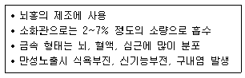
- 납(Pb)
- 수은(Hg)
- 카드뮴(Cd)
- 안티몬(Sb)
(정답률: 72%)
83. 다음 중 직업성 천식이 유발될 수 있는 근로자와 거리가 가장 먼 것은?
- 채석장에서 돌을 가공하는 근로자
- 목분진에 과도하게 노출되는 근로자
- 빵집에서 밀가루에 노출되는 근로자
- 폴리우레탄 페이트 생산에 TDI를 사용하는 근로자
(정답률: 66%)
84. 다음 중 무기성 분진에 의한 진폐증이 아닌 것은?
- 규폐증
- 용접공폐증
- 철폐증
- 면폐증
(정답률: 73%)
85. 다음 중 방향족 탄화수소 중 저농도에 장기간 노출되어 만성중독을 일으키는 경우 가장 위험한 것은?
- 벤젠
- 크실렌
- 톨루엔
- 에틸렌
(정답률: 59%)
86. 어떤 물질의 독성에 관한 인체실험 결과 안전 흡수량이 체중 1kg 당 0.15mg이었다. 체중이 70kg 인 근로자가 1일 8시간 작업할 경우 이물질의 체내 흡수를 안전흡수량 이하로 유지하려면 공기 중 농도를 얼마 이하로 하여야 하는가? (단, 작업시 폐환기율은 1.3m3/h, 체내 잔류율은 1.0으로 한다.)
- 0.52mg/m3
- 1.01mg/m3
- 1.57mg/m3
- 2.02mg/m3
(정답률: 68%)
87. 다음 중 중추신경계 억제작용이 큰 유기화학물질의 순서로 옳은 것은?
- 유기산 ＜ 알칸 ＜ 알켄 ＜ 알코올 ＜ 에스테르 ＜ 에테르
- 유기산 ＜ 에스테르 < 에테르 < 알칸 < 알켄 < 알코올
- 알칸 ＜ 알켄 ＜ 알코올 ＜ 유기산 ＜ 에스테르 ＜ 에테르
- 알코올 ＜ 유기산 ＜ 에스테르 ＜ 에테르 ＜ 알칸 ＜ 알켄
(정답률: 78%)
88. 다음 중 유병률(P)은 10% 이하이고, 발생률(I)과 평균이환기간(D)이 시간 경과에 따라 일정하다고 할 때 다음 중 유병률과 발생률 사이의 관계로 옳은 것은?
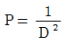
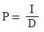
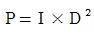
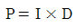
(정답률: 51%)
89. 다음 중 생물학적 모니터링(biological monitoring)에 대한 개념을 설명한 것으로 적절하지 않은 것은?
- 내재용량은 최근에 흡수된 화학물질의 양이다.
- 화학물질이 건강상 영향을 나타내는 조직이나 부위에 결합된 양을 말한다.
- 여러 신체 부분이나 몸 전체에서 저장된 화학물질 중 호흡기계로 흡수된 물질을 의미한다.
- 생물학적 모니터링에는 노출에 대한 모니터링과 건강상의 영향에 대한 모니터링으로 나눌 수 있다.
(정답률: 62%)
90. 다음 중 피부 독성에 있어 경피흡수에 영향을 주는 인자와 가장 거리가 먼 것은?
- 개인의 민감도
- 용매(vehicle)
- 화학물질
- 온도
(정답률: 65%)
91. 다음 중 망간중독에 관한 설명으로 틀린 것은?
- 금속망간의 직업성 노출은 철강제조 분야에서 많다.
- 치료제는 CaEDTA가 있으며 중독시신경이나 뇌세포 손상 회복에 효과가 크다.
- 망간의 노출이 계속되면 파킨슨증후군과 거의 비슷하게 될 수 있다.
- 이산화망간 흄에 급성 폭로되면 열, 오한, 호흡곤란 등의 증상을 특징으로 하는 금속열을 일으킨다.
(정답률: 82%)
92. 생리적으로는 아무 작용도 하지 않으나 공기 중에 많이 존재하여 산소분압을 저하시켜 조직에 필요한 산소의 공급부족을 초래하는 질식제는?
- 단순 질식제
- 화학적 질식제
- 물리적 질식제
- 생물학적 질식제
(정답률: 76%)
93. 다음 중 미국정부산업위생전문가협의회(ACGIH)의 노출기준(TLV) 적용에 관한 설명으로 틀린 것은?
- 기존의 질병을 판단하기 위한 척도이다.
- 산업위생전문가에 의하여 적용되어야 한다.
- 독성의 강도를 비교할 수 있는 지표가 아니다.
- 대기오염의 정도를 판단하는데 사용해서는 안 된다.
(정답률: 71%)
94. 체내에 노출되면 metallothionein 이라는 단백질을 합성하여 노출된 중금속의 독성을 감소시키는 경우가 있는데 이에 해당되는 중금속은?
- 납
- 니켈
- 비소
- 카드뮴
(정답률: 50%)
95. 금속열은 고농도의 금속산화물을 흡입함으로써 발병되는 질병이다. 다음 중 원인물질로 가장 대표적인 것은?
- 니켈
- 크롬
- 아연
- 비소
(정답률: 61%)
96. 다음 중 수은의 배설에 관한 설명으로 틀린 것은?
- 유기수은화합물은 땀으로도 배설된다.
- 유기수은화합물은 대변으로 주로 배설된다.
- 금속수은은 대변보다 소변으로 배설이 잘된다.
- 무기수은화합물의 생물학적 반감기는 2주 이내이다.
(정답률: 54%)
97. 산업특성학 용어 중 무관찰영향수준(NOEL)에 관한 설명으로 틀린 것은?
- 주로 동물실험에서 유효량으로 이용된다.
- 아급성 또는 만성독성 시험에서 구해지는 지표이다.
- 양-반응관계에서 안전하다고 여겨지는 양으로 간주한다.
- NOEL의 투여에서는 투여하는 전 기간에 걸쳐 치사, 발병 및 병태생리학적 변화가 모든 실험대상에서 관찰되지 않는다.
(정답률: 37%)
98. 다음 중 이황화탄소(CS2)에 관한 설명으로 틀린 것은?
- 감각 및 운동신경에 장애를 유발한다.
- 생물학적 노출지표는 소변 중의 삼염화에탄올 검사방법을 적용한다.
- 휘발성이 강한 액체로서 인조견, 셀로판 및 사염화탄소의 생산과 수지와 고무제품의 용제에 이용된다.
- 고혈압의 유병률과 콜레스테롤치의 상승빈도가 증가되어 뇌, 심장 및 신장의 동맥 경화성 질환을 초래한다.
(정답률: 48%)
99. 다음 중 생물학적 모니터링을 할 수 없거나 어려운 물질은?
- 카드뮴
- 유기용제
- 톨루엔
- 자극성물질
(정답률: 63%)
100. 다음 설명 중 ( ) 안에 들어갈 용어로 올바른 순서대로 나열된 것은?
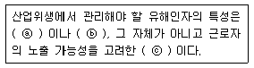
- ⓐ 독성, ⓑ 유해성, ⓒ 위험
- ⓐ 위험, ⓑ 독성, ⓒ 유해성
- ⓐ 유해성, ⓑ 위험, ⓒ 독성
- ⓐ 반응성, ⓑ 독성, ⓒ 위험
(정답률: 60%)